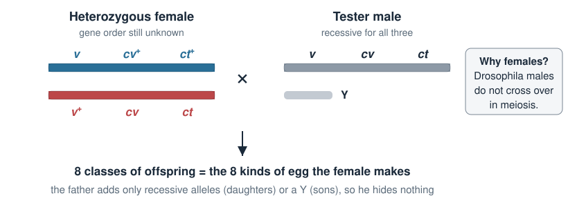
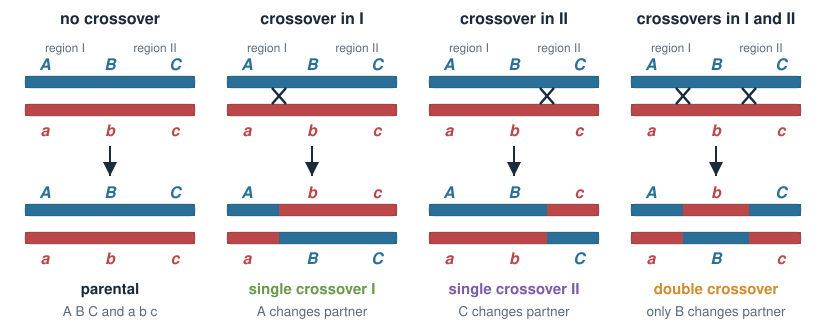
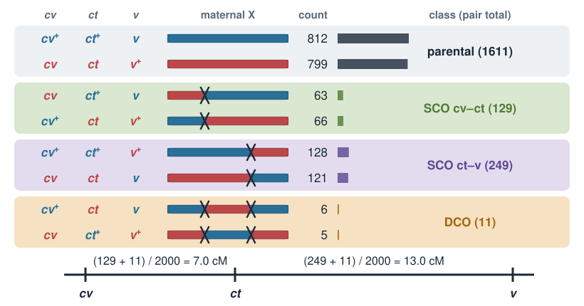
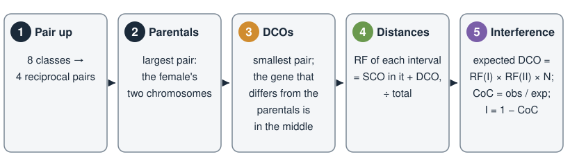

Part 2: Chromosomes and mapping. Gene order, map distances and interference from one cross
Basic and molecular genetics (5MO104)
About this lecture
In Linkage & recombination we measured the distance between two genes from a testcross. Following three linked genes in one cross gives more than three distances: it gives the order of the genes, and it shows the double crossovers that a two-point cross cannot see.
The three-point testcross: a triple heterozygote × a triple recessive tester; 8 offspring classes.
A five-step recipe: parentals (most common), double crossovers (rarest), the gene in the middle, the two distances.
Why the outer distance must count the double crossovers twice.
Expected double crossovers from the product rule; the coefficient of coincidence and interference.
A worked Drosophila example on the X chromosome: cv, ct and v.
Book: Hartwell, Genetics: From Genes to Genomes, linkage and recombination chapter (the three-point cross sections).
What two-point crosses leave open
Suppose two-point testcrosses give cv–ct 7 cM, ct–v 13 cM and cv–v 19 cM.
Order. 7 + 13 = 20 ≈ 19, so ct is probably in the middle. But with sampling noise in three separate crosses, and distances that do not add up exactly, the order can be ambiguous, especially for close genes.
Hidden double crossovers. Two crossovers between cv and v put cv and v back together in the parental combination. A two-point cross counts that chromatid as parental, so the long distance comes out too short.
Effort. Three separate crosses, three sets of flies.
A three-point cross answers all three in one cross: it measures both intervals in the same offspring and shows the double crossovers directly.
The three-point testcross

Female: heterozygous for three X-linked genes, v (vermilion eyes), cv (crossveinless wings) and ct (cut wings), with v on one X and cv ct on the other.
Male: recessive for all three (v cv ct / Y). He adds only recessive alleles, so each offspring’s phenotype shows which egg it came from.
Each egg carries one of 2^3 = 8 combinations of alleles: 8 phenotype classes.
The data: eight classes, four pairs
2000 offspring from v cv+ct+ / v+cv ct females × v cv ct / Y males (invented teaching counts):
Class
v
cv
ct
Count
1
v
+
+
812
largest pair: parental
2
+
cv
ct
799
3
+
+
+
128
4
v
cv
ct
121
5
+
+
ct
66
6
v
cv
+
63
7
v
+
ct
6
smallest pair: double crossovers
8
+
cv
+
5
The 8 classes come in reciprocal pairs: each crossover makes two complementary chromatids, so the two members of a pair have similar counts.
What each kind of crossover produces

A single crossover moves an end gene to the other chromosome. A double crossover, one in each interval, moves only the middle gene.
Step 2. The largest pair is parental: no crossover in either interval. Here v + + (812) and + cv ct (799).
So the female was v cv+ct+ / v+cv ct: v was on one X, cv and ct on the other. The parentals tell you the phase of the heterozygote, even if you were not told it.
Pair
Counts
Total
What it must be
(1, 2)
812 + 799
1611
parental
(3, 4)
128 + 121
249
single crossover
(5, 6)
66 + 63
129
single crossover
(7, 8)
6 + 5
11
double crossover
Step 3: the double crossovers give the order
Compare each double crossover class with the parental class it most resembles:
v
cv
ct
parental
v
+
+
DCO
v
+
ct
parental
+
cv
ct
DCO
+
cv
+
Only ct has changed partner. A double crossover moves only the middle gene, so ct is in the middle:
cv \;-\; ct \;-\; v \qquad (\text{or } v - ct - cv\text{: the same map read backwards})
The parental chromosomes in the true order: cv+ct+v / cv ct v+.
Rewrite the classes in the right order

In the order cv–ct–v, each class shows its crossovers: one switch of colour = one crossover.
Step 4: the two distances
Each interval’s recombination frequency counts every offspring with a crossover in that interval, so the double crossovers count in both:
We observed 11. Fewer double crossovers than independence predicts: a crossover in one interval seems to make a crossover in the neighbouring interval less likely.
Crossovers are spaced out. In Drosophila, mice and humans, a crossover makes another one nearby less likely. Over short intervals (a few cM) double crossovers are almost never seen: interference is close to complete.
Interference fades with distance. Over long distances, two crossovers on one chromosome arm are again roughly independent.
At least one crossover per bivalent. Most organisms make at least one crossover per pair of homologues; it holds the pair together until anaphase I and helps them separate correctly (Chromosome theory & sex linkage).
Not universal. The fission yeast Schizosaccharomyces pombe shows essentially no interference.
Map functions encode this: Haldane assumes no interference; Kosambi builds some in (Linkage & recombination).
Is the interference real, or noise?
Only 11 double crossovers were observed. Small counts are noisy:
If there were no interference (CoC = 1), we would expect 18.2 DCOs, but a cross of 2000 flies could easily give 13 or 24.
In the Exercise in R you simulate 1000 such crosses with no interference: the CoC lands between about 0.63 and 1.43 in 95% of them, and is as low as 0.60 in only about 2% of them.
So 0.60 is fairly strong evidence for interference, but with fewer flies it would not be.
A CoC computed from 2 or 3 double crossovers says very little. Rare classes need large crosses.
Try it: find the middle gene
The recipe, and the usual mistakes

Do not assume the parentals are + + + and all-mutant: read them off the counts.
Do not forget to add the DCOs to both intervals.
Rewrite the classes in the correct gene order before you classify the single crossovers.
Expected DCO uses the RFs (fractions), not cM: 0.070 × 0.130, not 7 × 13.
Our map and the real map
Genetic map positions on the Drosophila X chromosome, from NCBI Gene (field “MapLocation”, taken from FlyBase):
Gene
Name
Map position
Our three-point map
cv
crossveinless
1-12
0
ct
cut
1-20
7.0
v
vermilion
1-33
20.0
“1-20” means chromosome 1 (the X), 20 cM from the tip. The real order is cv–ct–v, with about 8 and 13 cM between them. Our (invented) counts give the same order and similar distances.
Maps like this were built in the 1910s–1930s from thousands of crosses like this one, starting with Sturtevant’s map of the X in 1913 (Linkage & recombination).
the largest pair; tells the phase of the heterozygote
Double crossover (DCO) classes
the smallest pair; only the middle gene has changed partner
Interval distance
(SCO in that interval + DCO) / N
Outer distance
sum of the two intervals; a two-point cross underestimates it by 2 × DCO / N
Expected DCO
RFI × RFII × N (product rule, if independent)
Coefficient of coincidence
CoC = observed DCO / expected DCO
Interference
I = 1 − CoC; usually positive (fewer DCOs than expected)
Worked example
cv – 7.0 cM – ct – 13.0 cM – v; CoC 0.60, I 0.40
Where this leads
Human linkage & LOD scores (next). In humans we cannot set up a testcross with thousands of offspring. Instead we combine small families and weigh the evidence for linkage with a likelihood, the LOD score.
Genome analysis (Part 4). Genetic maps in cM are now anchored to DNA sequence in base pairs; markers such as SNPs replace visible phenotypes.
Rearrangements & aneuploidy (Part 5). In an inversion heterozygote, recombinant chromatids from crossovers inside the inversion are lost, so map distances across it shrink.